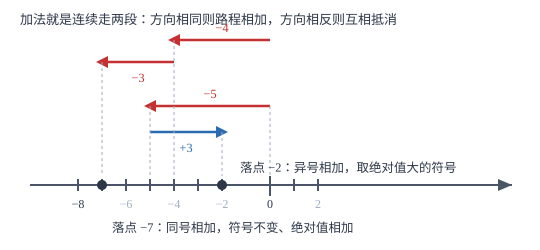

有理数的加法与减法
加法只做两件事：定符号、算绝对值。减法不用另立规则，把它改写成加法——减去一个数就是加上它的相反数，全章由此统一。
| 所属主题 | 有理数 |
|---|---|
| 所属模块 | 代数 |
| 课标学段 | 第四学段（7~9 年级） |
| 前置知识 | 数轴、相反数与绝对值、有理数的大小比较 |
| 核心素养 | 运算能力抽象能力 |
教材定位
人民教育出版社《人教版（2024版）义务教育教科书·数学》
七年级上册第2章 有理数的运算2.1 有理数的加法与减法
对应七上 2.1 有理数的加法与减法。教材分加法、减法、加减混合三块；本篇把「定符号—算绝对值」提炼成统一动作，并把数轴上的两点距离作为减法的几何解释补进来。
说明
有理数加法分四种情形，四条法则其实是一套动作。同号两数相加，取相同的符号，并把绝对值相加；异号两数相加，取绝对值较大的加数的符号，再用较大的绝对值减去较小的绝对值；互为相反数的两数相加得 0；一个数与 0 相加，仍得这个数。四条合起来只有两步：先定符号，再算绝对值。
减法不必另记一套规则：减去一个数，等于加上这个数的相反数，写成字母式是 a-b=a+(-b)。这一条把减法整体并入加法，于是所有加减法都能化成同一形式。加减混合运算的常规做法是先全部改写成加法，再省略加号与括号，例如 -3+5-2 可以看作 -3、+5、-2 三个数的和。加法满足交换律 a+b=b+a 与结合律 (a+b)+c=a+(b+c)，因此可以任意调换顺序、任意分组，常用的凑法是把互为相反数的一对、同分母的分数、能凑成整数的数先合在一起。
使用场景
连续变化量的累计是本篇的主场：一周的收支流水求和、一天内几次升温降温的累计、几段位移的合成、比赛得分的增减，全是把若干个带符号的数加起来。
减法的几何意义是求两点间距离。数轴上 A(a) 与 B(b) 的距离为 |a-b|，它不关心谁在左谁在右，所以算完取绝对值就不会出现负距离。工程上量两处高差、财务上算两个时点的差额，用的都是这个思路。
注意点
异号相加最容易错在符号。-5+3 不能写成 -8：两数异号，|-5|=5>3=|3|，所以符号跟着 -5 走取负号，绝对值相减得 2，结果是 -2。做的时候把「谁的绝对值大」这句话说出来，符号就不会跟错。
减去一个负数等于加上一个正数。5-(-3)=5+3=8，先改写再计算，不要直接算成 5-3=2。凡是减号后面紧跟括号且括号内为负，先做改写这一步。
两个数相加，结果不一定比每个加数都大。-5+3=-2，-2 比 3 小但比 -5 大。所以「相加一定变大」这个从小学带来的直觉在有理数里不成立，判断大小的题不能靠它。
证明

图 1：加法就是数轴上连续走两段。方向相同则路程相加，方向相反则互相抵消，剩下哪边多就往哪边落
证明
结论 1减去一个数等于加上这个数的相反数，即 a-b=a+(-b)。
加法与减法互为逆运算。若 a-b=c，则按减法定义有 c+b=a。现在验证 a+(-b) 也满足这一条：\big(a+(-b)\big)+b=a+\big((-b)+b\big)=a+0=a，用的是加法结合律与相反数之和为 0。既然 a+(-b) 加上 b 也得 a，它与 c 就是同一个数，所以 a-b=a+(-b)。
关键一步依据是「减法是加法的逆运算」加上「相反数之和为 0」：只要验证新写法满足减法的定义，两个表达式就必然相等。
结论 2异号两数相加，结果的符号由绝对值较大的那个加数决定。
把两个加数看成数轴上的两段位移。异号意味着两段位移方向相反，一段向右、一段向左，它们的作用部分互相抵消。抵消掉的是较短那一段的全部，剩下的差额方向与较长那一段相同。位移的长短就是绝对值，所以绝对值较大的加数方向决定了最终朝哪边，差额为两绝对值之差。
关键一步依据是数轴上位移的合成：方向相反的两段位移抵消后，剩余方向跟随较长的一段，长度等于两段之差。符号与绝对值由此各自确定。
结论 3加法交换律与结合律成立，因此计算时可以任意调序、任意分组。
每个加数对应一段位移，求和就是把若干段位移首尾相接。首尾相接的总位移只取决于各段的方向与长度，与接的顺序无关，这是交换律；把其中几段先接成一段再与其余相接，总位移也不变，这是结合律。两种操作都不改变起点与终点。
关键一步依据是位移合成的可交换与可结合：起点到终点只有一条总位移，中间怎么分段、按什么顺序走，都不影响落点。
动手实验
在纸上画一条数轴，用手指当棋子从 0 出发。先走 -5（向左 5 格），再走 +3（向右 3 格），落点在 -2。清空重来，先走 +3 再走 -5，落点还是 -2——这就是交换律。再试 -4 与 -3：先左 4 再左 3，落点 -7，两段方向相同，路程直接相加。走三遍之后，两条加法法则就不需要背了。
解题思路
做加法按四步：第一步看类型，同号、异号、互为相反数还是与 0 相加；第二步定符号，同号取共同符号，异号取绝对值较大者的符号；第三步算绝对值，同号相加、异号相减；第四步写结果，并用数轴估一下落点是否合理。异号且绝对值相等的情形直接写 0，不必再算。
做减法先改写：把 -b 之前的减号连同 b 的符号一起处理，统一写成加相反数，然后按加法的四步走。加减混合的式子，先全部改成加法，再省略加号与括号，接着找可以凑整的组合——互为相反数的先消、同分母的先合、能凑成整十整百的先并，最后按顺序累加。每步只写一个等号，过程不跳步。
按场景的例题
例 1（场景：销售与利润） 网店一周的收支流水
某网店一周内每日收支记录如下（收入为正，支出为负，单位：元）：+240、-156、+80、-324、+60。求这一周的收支合计。
解：同号的先各自合并，减少出错：三项收入 240+80+60=380，两项支出 -156+(-324)=-480。再把两组合起来：380+(-480)，异号，|-480|=480>380，取负号，绝对值相减 480-380=100，得 -100。逐项累加也得到同样结果：240-156=84，84+80=164，164-324=-160，-160+60=-100。合计为负说明支出大于收入，净支出 100 元。
答：合计 -100 元，即本周净支出 100 元。
例 2（场景：物理情境） 一天内气温的几度升降
某地早上 6 时气温为 -7 ℃，中午 12 时比早上上升了 12 ℃，傍晚 18 时比中午下降了 9 ℃，深夜 24 时又比傍晚下降了 4 ℃。求中午、傍晚、深夜三个时刻的气温，以及这一天 6 时至 24 时的总变化量。
解：上升记为正、下降记为负，逐段累加：中午 12 时为 -7+12=5 ℃；傍晚 18 时为 5+(-9)=-4 ℃；深夜 24 时为 -4+(-4)=-8 ℃。总变化量把三段变化相加：12+(-9)+(-4)，先合并两个负数得 12+(-13)，异号取绝对值较大者 -13 的符号，13-12=1，得 -1 ℃。也就是说，一整天下来比 6 时低了 1 ℃。用首末两值验算：-8-(-7)=-1，一致。
答：中午 5 ℃，傍晚 -4 ℃，深夜 -8 ℃；总变化量为 -1 ℃，即下降了 1 ℃。
例 3（场景：行程与速度） 数轴上连续移动的落点与距离
数轴上点 A 的坐标为 -3，它先向右移动 7 个单位长度到达点 B，再从点 B 向左移动 12 个单位长度到达点 C。(1) 求 B、C 的坐标；(2) 求 A 与 C 之间的距离。
解：(1) 向右为正，坐标为加上移动量：B 的坐标 -3+7=4；向左为负：C 的坐标 4+(-12)=-8。(2) 两点距离等于坐标之差的绝对值：|(-3)-(-8)|=|-3+8|=|5|=5。也可以直接数格子：A 在 -3、C 在 -8，两点相距 5 个单位长度。若写成 |(-8)-(-3)|=|-5|=5，顺序换过来结果一样，距离与先后无关。
答：(1) B(4)，C(-8)；(2) A 与 C 相距 5 个单位长度。
常用推论
一个数与它的相反数相加得 0：a+(-a)=0。计算长串加减时，先把互为相反数的项两两消去，能省一半工作量。
任何数减 0 得它本身（a-0=a），0 减任何数得它的相反数（0-a=-a）。后者常被误算成 a，写的时候先补一步改写。
数轴上两点距离为 |a-b|，且 |a-b|=|b-a|。所以求距离不必先判断哪边是大数，直接相减取绝对值即可。
若干个有理数相加，可以任意交换加数位置、任意分组，和不变。凑整、消相反数、并同分母这些技巧，都是这条性质的具体用法。
易错点
错计算 -5+3 得 -8。
为什么错看到两个数的符号不同却按同号处理，把绝对值直接相加了。
正确两数异号，|-5|=5 大于 |3|=3，符号跟随绝对值较大的 -5 取负，绝对值相减 5-3=2，结果是 -2。
错计算 5-(-3) 得 2。
为什么错把「减去一个负数」当成「减去一个正数」，漏掉了改写成加相反数这一步。
正确5-(-3)=5+(+3)=8。减号后面括号内是负数时，先改写再计算。
错认为两个数相加，结果一定比每个加数都大。
为什么错把小学里「加就是变多」的经验直接搬过来，没有考虑负数是「反向的量」。
正确-5+3=-2，-2 比 3 小、比 -5 大。加法在数轴上表现为两段位移的合成，反向时会互相抵消，所以和可能变小甚至为负。
直观理解
把账本当作模型：正数是进账，负数是出账。-5+3 就是先出 5 元、再进 3 元，最后账上少了 2 元，所以是 -2。减法 5-(-3) 相当于「把一笔 3 元的欠款划掉」，欠款划掉等于资产增加，所以是 8。加减法在生活里就是记账，符号就是方向。